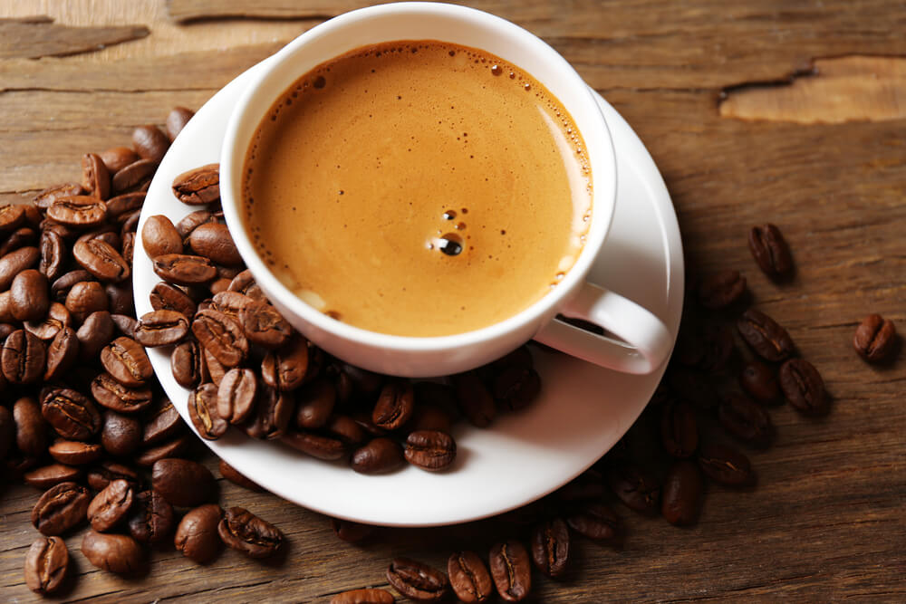
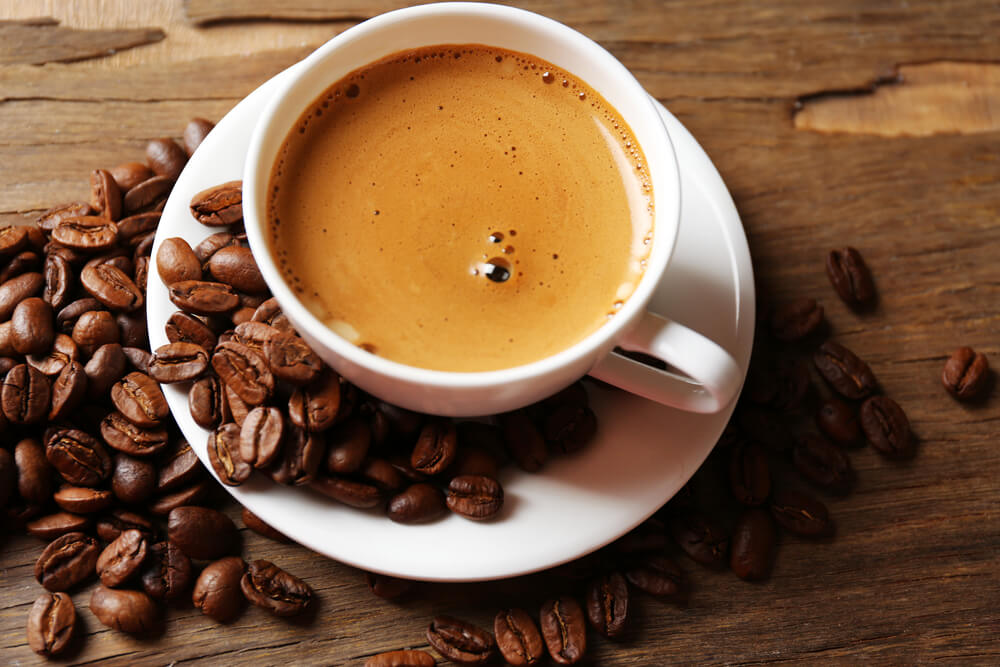

A caffeine coffee bar is more than just a place to grab a quick cup of coffee; it's a vibrant hub for coffee enthusiasts to gather and indulge in their passion for expertly crafted beverages. The ambiance of a coffee bar is crucial, often characterized by a cozy, inviting atmosphere with comfortable seating and a modern, stylish design. Offering a menu that includes a wide variety of coffee drinks, from classic espressos and cappuccinos to specialty brews and seasonal creations, caters to a diverse clientele. The baristas, skilled in their craft, not only prepare exceptional coffee but also engage with customers, sharing their knowledge about the different beans, brewing methods, and flavor profiles. This personal touch transforms a simple coffee break into an educational and enriching experience.
In addition to serving top-notch coffee, a successful caffeine coffee bar often provides an assortment of pastries, sandwiches, and other light bites, making it a perfect spot for breakfast or a mid-day snack. The integration of free Wi-Fi and ample power outlets attracts students, freelancers, and professionals looking for a comfortable place to work or study. Hosting events such as coffee tasting sessions, brewing workshops, and live music nights can further enhance the community feel and draw in a regular crowd. By focusing on quality, customer experience, and community engagement, a caffeine coffee bar can become a beloved local establishment where people come not just for the caffeine boost, but for the connection and culture surrounding coffee.
 
